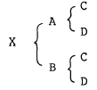
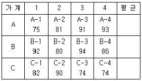
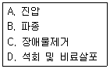
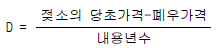
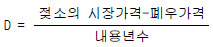
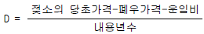
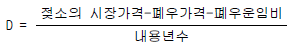

축산기사 (2003-05-25 기출문제)
1과목: 가축육종학
1. 젖소 개량시 사용되는 예측치(PD:Predicted difference)란 무엇인가?
- 부피단위의 차이를 뜻한다.
- 무게단위의 차이를 뜻한다.
- 표현형의 차이를 뜻한다.
- 유전능력의 차이를 뜻한다.
(정답률: 64%)

2. X의 가계도는 다음과 같다. X의 근교계수는? (단, FC = FD = RCD = 0)

- 0.00
- 0.25
- 0.50
- 0.75
(정답률: 75%)
3. 염색체의 이수현상(異數現象)을 틀리게 표현한 것은?
- 영염색체적(Nullisomic): 2n-2
- 단염색체적(Monosomic): 2n-1
- 4염색체적(Tetrasomic): 4n
- 2중 3염색체적(Double trisomic): 2n+1+1
(정답률: 50%)
4. 소에서 뿔의 유무를 결정하는 실험에서 유각(horned)의 동형접합체와 무각(polled)의 동형접합체 사이에서 태어난 자손에서 표현형적으로 유각일 확률은?
- 100%
- 50%
- 25%
- 0%
(정답률: 48%)
5. 브로일러의 경제적인 생산을 위한 종계의 교배체계는?
- 육용종(♀)× 육용종(♂)
- 육용종(♀)× 겸용종(♂)
- 겸용종(♀)× 육용종(♂)
- 산란종(♀)× 육용종(♂)
(정답률: 66%)
6. 다음 중 DNA에는 없고 RNA에만 존재하는 질소염기는?
- Uracil
- Adenine
- Guanine
- Cytosine
(정답률: 85%)
7. 부친의 형질 측정치를 독립 변수로 하고 자식의 형질 측정치를 종속 변수로 하여 회귀계수를 구하였는 바 회귀계수는 0.15 이었다. 이 때 유전력은 얼마인가?
- 0.07
- 0.15
- 0.30
- 0.45
(정답률: 72%)
8. 닭에 있어서 장미관 흑색인 햄버그(Hamburg)종과 단관백색인 레그혼(Leghorn)종을 교배시키면 F1에서 볏의 모양과 우모색은 어떻게 발현되는가?
- 단관백색
- 단관흑색
- 장미관 백색
- 장미관 흑색
(정답률: 63%)
9. 닭의 품종인 백색 레그혼종의 우모색 유전에 대한 설명중 틀린 것은?
- 억제유전자에 의하여 지배된다.
- 우성백색이다.
- 열성백색이다.
- 유색유전자(CC)의 발현이 억제된 것이다.
(정답률: 64%)
10. 육우에서 교잡종 생산을 위한 잡종강세에 이용된 유전 작용의 주 원인은?
- 우성의 효과
- 열성의 효과
- 상가적 효과
- 돌연변이 효과
(정답률: 63%)
11. 선발에 의한 효과를 크게 하는 방법은?
- 선발 비율을 크게 한다.
- 우수한 암가축을 나이가 들어 번식에 이용한다.
- 외부로부터 새로운 유전자를 도입한다.
- 균일한 사양 관리 조건하에서 사육한다.
(정답률: 54%)
12. 돼지의 증체율을 개량하기 위해 3개의 전형매 가계를 능력 검정하였다. 전형매 가계는 각각 4마리의 수퇘지로 이루어졌으며 이들의 번호와 154일령 체중은 다음과 같다. 검정된 12마리의 수퇘지 중 4마리만을 종돈으로 이용하고 나머지는 도태하고자 한다. 가계 선발에 의하여 선발되는 개체의 번호는?

- A-3, A-4, B-1, B-3
- A-4, B-1, B-3, C-2
- B-1, B-2, B-3, B-4
- A-4, B-1, B-3, B-4
(정답률: 54%)
13. 흑색 무각인 암소와 적색 유각인 수소의 교배에 의하여 우성인자인 흑색 무각 송아지만이 생산되었다는 것을 설명한 것은?
- 멘델의 우열의 법칙
- 멘델의 분리의 법칙
- 멘델의 독립의 법칙
- 멘델의 교잡의 법칙
(정답률: 82%)
14. 돼지의 육종 목표가 아닌 것은?
- 복당 산자수를 많게 하고 육성율을 향상시킨다.
- 예방 접종을 철저히 함으로써 자돈의 폐사율을 줄인다.
- 성장률을 빠르게 하여 시장출하 체중 도달일수를 단축시킨다.
- 사료 효율을 개선하여 사료비를 절감한다.
(정답률: 71%)
15. 한우의 능력 검정에 사용되는 용어 중 잘못 설명된 것은?
- 당대 검정 : 후보 종모우를 선발하기 위해 자손의 능력을 검정하는 것
- 후보 종모우 : 당대 검정을 통해 선발된 능력이 우수한 수소
- 보증 종모우 : 후대 검정을 통해 선발된 능력이 공인된 수소
- 검정 대상우 : 후대 검정을 위해 생산된 수송아지
(정답률: 55%)
16. 배수체(polyploid)의 특성에 대한 일반적인 설명으로 틀린 것은?
- 2배체 기준시 반수체는 소형이며 생존력이 약한 경우가 많다.
- 배수체는 성장이 늦어서 조숙성에서 만숙성으로 되는 경우가 많다.
- 게놈(genome)함량의 산술적인 증가로 인해 번식능력이 좋아진다.
- 병해충, 저온피해, 건조 등에 대한 저항력이 강한 것이 많다.
(정답률: 62%)
17. 육우의 주요 경제형질이 아닌 것은?
- 번식형질
- 발육형질
- 도체형질
- 비유형질
(정답률: 80%)
18. 대립유전자간의 상호작용에서 이형접합체의 유전자를 가진 개체가 동형접합체를 가진 개체보다 성적이 우수한 현상을 무엇이라고 하는가?
- 열성
- 돌연변이
- 한성
- 초우성
(정답률: 83%)
19. 다음 중 젖소의 형질 중 유전력이 가장 낮은 것은?
- 유량
- 유지율
- 단백율
- 총고형분율
(정답률: 50%)
20. 산육계에서 모계통의 번식능률을 결정해 주는 요소가 아닌 것은?
- 산란수
- 수정율
- 부화율
- 난중
(정답률: 64%)
2과목: 가축번식생리학
21. 정자의 운동에 필요한 에너지(energy)를 합성 공급하는 부위는?
- 두부(head)
- 중편부(middle piece)
- 주부(main piece)
- 경부(neck)
(정답률: 72%)
22. 소의 발정 징후라고 볼 수 있는 항목은?
- 식욕증가
- 행동의 안정상태 유지
- 착유소의 경우 유량 증가
- 암소나 숫소의 승가 허용
(정답률: 76%)
23. 영구황체 치료시에 사용하는 호르몬은?
- PGF2α
- LTH
- STH
- MSH
(정답률: 73%)
24. 포유가축에서 정자와 난자가 만나서 수정이 이루어질 때 다정자 침입을 방지하는 세가지 주요 생리적 작용이 아닌것은?
- 투명대 반응
- 난황차단
- 첨체반응
- 정자수의 제한
(정답률: 48%)
25. 세균성감염에 의한 급.만성 전염병으로 유산을 일으키는 것은?
- 과립성 질염
- 소의 트리코모나스병
- 브루셀라병
- 톡소플라즈마병
(정답률: 68%)
26. 수정란 이식에 의하여 얻어지는 최대의 잇점은 무엇인가?
- 우수종모축의 이용효율 증대
- 종모축의 후대검정 촉진
- 종모축 사육상의 이익 증대
- 우수종빈우의 이용효율 증대
(정답률: 55%)
27. 계절번식을 하는 동물은?
- 소
- 돼지
- 토끼
- 말
(정답률: 73%)
28. 소의 4세포기 수정란을 일시적으로 토끼에 이식하여 배양할 경우 적절한 이식장소는?
- 난관
- 자궁각
- 자궁체
- 자궁경
(정답률: 35%)
29. 자궁의 형태가 쌍각자궁인 가축은?
- 소
- 돼지
- 토끼
- 말
(정답률: 74%)
30. 정자의 수정능력 획득을 바르게 설명한 것은?
- 정자는 형성과 동시에 수정능력을 획득하게 된다.
- 정자는 정자변형과 동시에 수정능력을 획득하게 된다
- 정자는 난자와 수정하기 전에 암컷의 생식기도내에서 수정능력을 획득한다.
- 정자는 사출과 동시에 수정능력을 획득한다.
(정답률: 61%)
31. 축산분야의 응용에서 분만이 지연될 때 분만촉진제로서 또는 유즙의 유하(流下)를 유도하기 위하여 사용되기도 하는 Peptide계는?
- PGF2α
- PGF1α
- Oxytocin
- ADH
(정답률: 70%)
32. 비유개시와 관계 깊은 호르몬은?
- 에스트로겐(estrogen)
- 프로락틴(prolactin)
- 옥시토신(oxytocin)
- 난포자극호르몬(FSH)
(정답률: 58%)
33. 포유동물에서 초유를 먹이는 가장 큰 이유는?
- 소화가 잘되고 모체의 유즙분비를 지속시키기 때문이다.
- 초기성장에 필요한 호르몬을 공급하기 때문이다.
- 필요한 면역물질을 공급하기 때문이다.
- 단백질 등 필수 영양소가 많아 발육을 촉진시키기 때문이다.
(정답률: 73%)
34. 임신기간에 영향을 미치는 요인 중 틀린 것은?
- 모체의 연령
- 소의 쌍태
- 소의 단태
- 태아의 성(性)
(정답률: 50%)
35. 다음 중 숫소의 춘기발동기는?
- 8-11 월령
- 12-24 월령
- 24-36 월령
- 36-48 월령
(정답률: 64%)
36. 난포자극 호르몬의 생리작용에 대하여 바르게 설명한 것은?
- 난포자극호르몬은 난포의 성장과 성숙을 자극한다.
- 난포자극호르몬은 옥시토신의 분비를 자극한다.
- 난포자극호르몬은 성장호르몬 분비를 자극한다.
- 난포자극호르몬은 정자형성에는 관여하지 않는다.
(정답률: 72%)
37. 말의 분만시 자궁경관이 완전히 확장된 후부터 분만이 완료될 때까지의 시간으로 가장 적당한 것은?
- 0.2-0.5시간
- 1.2-1.5시간
- 2.2-2.5시간
- 3-4시간
(정답률: 27%)
38. 소의 발정동기화를 위해서 사용되지 않는 것은?
- 프로스타그랜딘(prostaglandin)
- 에스트로겐(estrogne)+프로게스테론(progesterone)
- 프로게스테론(progesterone)+프로스타그랜딘(prostaglandin)
- 황체형성호르몬방출호르몬(LHRH)+임부태반융모성성선자극호르몬(HCG)
(정답률: 43%)
39. 초유류의 정소를 체온보다 낮은 온도로 유지하는데 직접적으로 관계가 없는 것은?
- 음낭피부의 땀샘
- 백막
- 육양막
- 내정소근
(정답률: 47%)
40. 소의 경우 교배 후 정자와 난자가 난관팽대부에서 만나 수정을 완료하는데 소요되는 적절한 시간은?
- 10-12시간
- 20-24시간
- 17-18시간
- 30시간
(정답률: 57%)
3과목: 가축사양학
41. 일반적으로 번식돈의 발정주기와 임신일수가 바르게 짝지어진 것은?
- 4일, 114일
- 21일, 144일
- 4일, 144일
- 21일, 114일
(정답률: 63%)
42. 지방산 합성시 환원작용에서 조효소로 이용되는 것은?
- NADH
- CO2
- FAD
- NADPH
(정답률: 58%)
43. 베타산화(β -oxidation)는 다음 중 어떤 영양소의 산화와 밀접한 관련이 있는가?
- 비타민
- 단백질
- 지방산
- 포도당
(정답률: 72%)
44. 비육우의 사양을 바르게 설명한 것은?
- 비육말기에 단백질을 많이 공급할수록 육질이 더 좋아진다.
- 비육중인 가축에게 수용성 비타민의 공급은 필수적이다.
- 대두박이나 옥수수를 많이 급여하면 체지방이 연해진다.
- 고기의 상품가치는 연지방이 많을수록 좋다.
(정답률: 61%)
45. 다음 중 결핍되면 야맹증을 일으키는 비타민은?
- 비타민 A
- 비타민 D
- 비타민 E
- 비타민 K
(정답률: 71%)
46. 다음 중 무기영양소에 속하는 것은?
- 단백질
- 지방
- 광물질
- 비타민
(정답률: 75%)
47. 생리적 특성상 대사에너지(ME)가 표준열량 표시방법으로 널리 사용되는 축종은?
- 닭
- 돼지
- 소
- 양
(정답률: 62%)
48. 돼지의 미경산돈은 대개 강정사양(flushing)의 효과가 크다. 강정사양이란?
- 교배하기 전에 에너지 섭취량을 증가시켜 주는 것
- 교미전에 휴식
- 시장에 출하하기 직전 비육
- 도살직전에 절식 및 급수의 중단
(정답률: 76%)
49. 식물체의 조성에 대한 설명 중 틀린 것은?
- 잎과 줄기의 화학적 조성은 거의 같다.
- 식물이 성숙하면서 수분은 감소하고 섬유질은 증가한다.
- 전분은 자연계의 탄수화물 중 동물이 요구하는 에너지의 가장 많은 양을 공급한다.
- 같은 초종에 속하는 식물이라도 토양조건에 따라 영양소 함량에 차이가 많다.
(정답률: 61%)
50. 옥수수 60%, 대두박 38%, 인산칼슘 2%를 사료로 혼합 급여하고자 한다. 혼합된 농후사료의 TDN은 얼마인가?(단, TDN은 건물기준으로 옥수수 85%, 대두박 84%, 인산칼슘 0%)
- 약 81.9 %
- 약 82.9 %
- 약 83.9 %
- 약 84.9 %
(정답률: 58%)
51. 건초의 품질을 평가하는데 있어서 고려사항이 아닌것은?
- 수분 함량
- 단백질 함량
- 분쇄도
- 조섬유 함량
(정답률: 65%)
52. 소화율에 영향을 주는 요인을 설명한 것 중 맞는 것은?
- 생초와 건초의 소화율에는 차이가 없다.
- 단위 동물에서 감자, 고구마, 곡류 등을 삶아 급여하면 소화율에는 영향이 없다.
- 반추 가축은 비반추 가축에 비하여 조섬유 소화율이 높다.
- 지방첨가는 첨가량에 관계 없이 소화율을 높인다.
(정답률: 70%)
53. 젖소의 분만한 어미소로부터 생산되는 초유의 생산시기로 가장 적당한 것은?
- 1∼3일간
- 3∼5일간
- 5∼7일간
- 7∼9일간
(정답률: 57%)
54. 초유가 일반 우유에 비하여 낮은 성분은?
- 유당
- 면역글로불린
- 칼슘
- 단백질
(정답률: 72%)
55. 육탄당 일인산회로의 기능적 특성이 아닌 것은?
- 오탄당의 공급원이다.
- NADPH의 생산기구이다.
- 유당이 생성된다.
- 직접산화에 의해 CO2가 생성된다.
(정답률: 48%)
56. 단백질의 대사과정 중 요소회로가 일어나는 장소는?
- 간과 근육
- 간과 췌장
- 간과 신장
- 간과 맹장
(정답률: 65%)
57. 건초의 안전한 저장을 위해서 수분함량은 몇 % 이하여야 하는가?
- 35%
- 25%
- 20%
- 15%
(정답률: 75%)
58. 단미사료공정규격(농림부고시 1999-39호)에는 섬유질사료의 조섬유(Crude fiber)함량이 건물기준으로 최소한 몇 % 이상 함유되어 있어야 한다고 규정하고 있는가?
- 최소 10% 이상
- 최소 12% 이상
- 최소 15% 이상
- 최소 18% 이상
(정답률: 48%)
59. 갓 태어난 병아리의 첫 모이와 물은 부화 후 몇 시간정도에 공급해 주는 것이 좋은가?
- 부화 후 15∼16시간에 첫 모이와 물을 공급한다.
- 부화 후 15∼18시간에 물을, 18∼21시간에 첫 모이를 공급한다.
- 부화 후 12∼13시간에 물을, 15∼16시간에 첫 모이를 공급한다.
- 부화 후 21∼22시간에 물을, 24∼25시간에 첫 모이를 공급한다.
(정답률: 59%)
60. 봄철에 방목중인 육우에서 그래스데타니(grass tetany)가 발생하는데 다음 중 어떤 광물질의 결핍이 그 원인인가?
- Fe
- Se
- Mg
- K
(정답률: 62%)
4과목: 사료작물학 및 초지학
61. 사료작물의 생존년한에 의한 분류 중에 다년생에 속하지 않는 것은?
- 화이트 클로버
- 토올페스큐
- 티모시
- 이탈리안 라이그라스
(정답률: 65%)
62. 초지의 토양 침식방지에 관한 역할이 아닌 것은?
- 토양의 온도를 낮추어 준다.
- 토양이 다공성이 된다.
- 빗방울의 충격을 줄여준다.
- 많은 가는 뿌리를 가지고 흙을 결박한다.
(정답률: 45%)
63. 중북부 지방의 밭에서 사료작물을 생산하기 위하여 윤작을 할 때 작부방식 중 여름작물로 가장 중요한 작물은?
- 피
- 호밀
- 연맥
- 옥수수
(정답률: 56%)
64. 간이 초지조성에 사용되는 제초제의 특성과 거리가 먼것은?
- 풀을 완전하게 죽일 수 있어야 한다.
- 풀을 죽이는데 효과가 빠른 것이어야 한다.
- 새로 출현한 어린 식물은 제초제의 잔여 해독이 없어야 한다.
- 선택성 제초제이어야 한다.
(정답률: 33%)
65. 겉뿌림법으로 초지를 조성하려 한다. 옳은 순서대로 된 것은?

- A - C - D - B
- B - A - C - D
- C - D - B - A
- D - C - A - B
(정답률: 59%)
66. 수단그라스계 잡종을 파종한 사료작물포에 소를 방목시키려 한다. 청산 중독의 위험이 가장 큰 상황은?
- 비가 내린 뒤
- 기온이 따뜻할 때
- 초봄에 생육이 시작될 때
- 질소시비를 한지 두 달되었을 때
(정답률: 47%)
67. 방목 이용의 장점이 아닌 것은?
- 영양적으로 유리하다.
- 수확, 이용에 노력이 절약된다.
- 가축의 건강에 좋다.
- 풀의 생육에 좋다.
(정답률: 45%)
68. 사일리지 조제시 발효과정에서 가장 중요한 미생물은?
- 젖산균
- 초산균
- 낙산균
- 효모
(정답률: 64%)
69. 불경운초지 개량의 장점은?
- 가뭄시 어린 목초의 정착이 빠르다.
- 표토가 얕고 기계가 없어도 조성이 가능하다.
- 초지의 목양력 증가가 빠르다.
- 단위 면적당 목초의 수량증가가 빠르다.
(정답률: 56%)
70. 어릴 때 청예나 방목하면 청산 함량이 높아 청산중독의 위험이 있는 사료작물은?
- 옥수수
- 호밀
- 수수류
- 연맥
(정답률: 60%)
71. 저수분 사일리지의 적당한 수분함량은?
- 20∼40%
- 40∼60%
- 60∼80%
- 80∼100%
(정답률: 61%)
72. 십자화과 사료작물이 아닌 것은?
- 순무
- 돼지 감자
- 유채
- 양배추
(정답률: 56%)
73. 우리나라 농업부산물 중 대가축에 가장 많이 이용되고 있는 것은?
- 볏짚
- 보릿짚
- 옥수수대
- 채소부산물
(정답률: 70%)
74. 흔히 초지에서는 단파보다 혼파시 유리한 점이 많기 때문에 혼파를 한다. 다음 중 혼파시 유리한 점은?
- 파종이 편리하다.
- 종자를 절약한다.
- 관리하기가 쉽다..
- 목초 영양분의 균형을 맞출 수 있다.
(정답률: 60%)
75. 만약 3ha의 방목지에 체중 500kg의 젖소 20두와 체중 250kg의 육성우 10두를 100일간 방목하였을 때 이 방목지의 방목일(放牧日, cow-day)은?
- 1800일
- 2500일
- 2000일
- 3500일
(정답률: 53%)
76. 하고현상의 원인과 관련이 없는 것은?
- 병해
- 고온
- 토양
- 한발
(정답률: 33%)
77. 북방형 사료작물에 속하는 것은?
- 옥수수
- 수단그라스
- 티모시
- 버뮤다그라스
(정답률: 50%)
78. 답리작에 적합한 작물의 특징이 아닌 것은?
- 다년생이어야 한다.
- 내습성이 강해야 한다.
- 내한성이 강해야 한다.
- 내음성이 강해야 한다.
(정답률: 51%)
79. 가축의 연간 사료 필요량을 산출하는 방법의 설명으로 잘못된 것은?
- 가축의 사양표준과 사료성분 성적표를 기준으로 추산 한다.
- 사양표준에는 월 1마리에 대한 소요량이 영양성분으로 표시되어 있다.
- 유우의 경우 1일에 그 체중의 약 10 - 15% 의 생초를 기준으로 계획한다.
- 필요 영양분은 가소화 성분으로 계산한다.
(정답률: 26%)
80. 다음은 사료작물의 품종명을 나열한 것이다. 옥수수의 품종에 속하는 것은?
- 수원 19호
- 점보
- 쿨그레이져
- 카이유스
(정답률: 43%)
5과목: 축산경영학 및 축산물가공학
81. 축산경영의 경제적 특징이 아닌 것은?
- 자금회전의 원활화
- 토지와 노동력 이용도 제고
- 생산의 안전화 또는 다양화
- 생산물의 저장성 증진
(정답률: 60%)
82. 축산경영에 있어서 공동조직을 지속적으로 유지하기 위해서는 다음의 원칙들이 전제되어야 한다. 틀린 것은?
- 민주화의 원칙
- 공평의 원칙
- 유리성의 원칙
- 경쟁의 원칙
(정답률: 57%)
83. 축산경영에서 자본진단의 지표로 사용될 수 없는 것은?
- 고정비율
- 고정자본율
- 자기자본율
- 손익분기율
(정답률: 38%)
84. 양계의 수익성을 극대화하기 위한 방안이 아닌 것은?
- 폐사율을 감소시킨다.
- 품질 및 상품가치의 균일성을 유지시킨다.
- 생산능력을 향상시킨다.
- 사료 요구율을 높인다.
(정답률: 67%)
85. 복합경영의 장점에 해당되는 것은?
- 작업이 단일화됨으로써 기계 이용이 가능하다.
- 분업의 이익을 얻을 수 있다.
- 노동배분의 평균화와 토지의 합리적인 이용이 가능하다.
- 생산물이 표준화되어 판매상 유리하다.
(정답률: 57%)
86. 축산경영을 분류하는데 있어서는 가축의 종류에 의하여 분류하는 것이 일반적인데 다음 중 가축 종류에 의한 분류방법으로 볼 수 없는 항목은?
- 전업경영
- 낙농경영
- 양돈경영
- 육우경영
(정답률: 67%)
87. 축산경영의 효율을 측정하는 지표가 아닌 것은?
- 일당 증체량
- 부채비율
- 자본회전율
- 두당 우유생산량
(정답률: 42%)
88. 축산경영의 일반적인 의사 결정 내용이 아닌 것은?
- 무엇을 생산할 것인가
- 왜 생산할 것인가
- 어떠한 방법으로 생산할 것인가
- 각 축산물을 얼마나 생산할 것인가
(정답률: 59%)
89. 양돈 비육경영의 수익성 향상 방안으로 부적당한 것은?
- 판매돈 1두당 매상고 증대
- 판매돈 1두당 비용 절감
- 사고율을 낮춤
- 육성율을 높임
(정답률: 25%)
90. 양계경영에 있어서 입체방법의 결점이 아닌 것은?
- 사료효율이 낮다.
- 발육속도가 낮다.
- 토지 소요면적이 적다.
- 육성율이 낮다.
(정답률: 57%)
91. 다음 비목 중 우유생산비에 가장 큰 영향을 끼치는 비목은?
- 사료비
- 자본이자
- 감가상각비
- 노동비
(정답률: 66%)
92. 비육우의 두당 조수입이 270만원이고, 소득이 81만원이라면 소득율은 얼마인가?
- 60%
- 50%
- 40%
- 30%
(정답률: 66%)
93. 낙농에서 어느 경산우 1두의 년간 총사육비가 150만원(그중 고정비가 50만원, 변동비가 100만원)이고, 이 때 산유량은 5000kg이었으며 우유 1kg당 변동비가 200원, 우유농가 판매가격이 kg당 400원이라면 이 소의 년간 손익분기 우유 생산량은?
- 2500kg
- 3750kg
- 4000kg
- 5000kg
(정답률: 17%)
94. 젖소의 감각상각비 D를 계산하는 공식을 옳게 표현한 것은?




(정답률: 57%)
95. 축산경영의 일반적 특징인 것은?
- 공장 가공생산
- 단기간의 생산
- 2차 생산의 성격
- 자급자족적 경영
(정답률: 63%)
96. 양돈산업의 발전방향으로 적합하지 않은 것은?
- 공동방역 시스템의 구축
- 계열화 사업의 확충
- 부업양돈의 확산
- 분뇨의 자원화 촉진
(정답률: 55%)
97. 생산함수가 Y＝50＋1.5X－0.5X2 이며, Px＝500원, Py＝1000원이라면, X의 적정 투입 수준은? (단, X＝농후사료, Y＝육계체중)
- 1단위
- 2단위
- 15단위
- 50단위
(정답률: 39%)
98. 축산경영의 궁극적인 목표는?
- 소득 증대 및 순이익의 극대화
- 생산기술의 극대화
- 조직의 극대화
- 생산량의 극대화
(정답률: 68%)
99. 한우번식경영에 대한 설명들 중 맞지 않는 것은?
- 한우번식농가의 주산물 수입은 송아지 판매이다.
- 한우번식농가의 조수입 증대를 위해서는 번식률을 향상시켜야 한다.
- 한우번식농가의 소득증대를 위해서는 조수입 증대와 경영비 절감을 해야 한다.
- 한우번식농가는 우선적으로 송아지 생산비 중 가축비를 절감해야 한다.
(정답률: 66%)
100. 다음 중 고정자본재에 속하는 것은?
- 산란계
- 비육우
- 브로일러
- 소농구
(정답률: 49%)